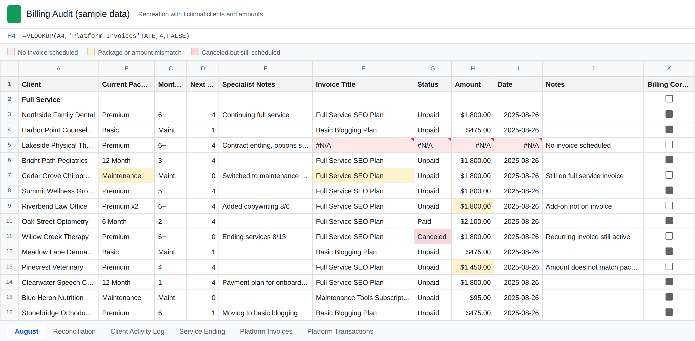
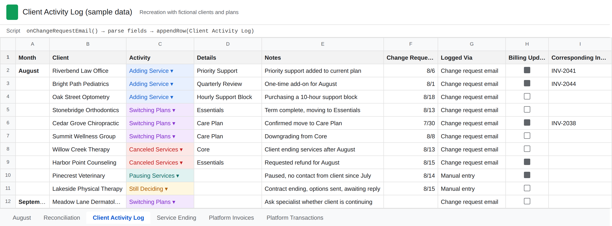

Case study: business operations at a remote marketing agency, 2023 to 2025
A billing audit that catches errors before clients are charged
A remote agency billed 150+ clients on recurring plans through a payments platform. Seven or eight of those charges were wrong every month, and nobody knew until a client noticed. I built a reconciliation that compares what the team expects to bill against what the platform is scheduled to charge, two weeks before the charges run.
The situation
The agency served private practices and small businesses on monthly plans. Clients moved between plans often: a project ended and the client shifted to a lighter maintenance plan, a client upgraded, added a service, paused, or cancelled. Each client had a specialist who managed the relationship, and a VP oversaw the specialists and handled clients whose contracts were transitioning.
Charges ran automatically on the 25th of each month through the agency's payments platform, based on whatever recurring invoice was scheduled for each client. The team's shared client sheet held the plan each client was supposed to be on. The two were maintained separately, and nothing connected them.
I owned the billing cycle, including a billing audit on the 10th of each month that existed to confirm every client was scheduled to be charged the right amount, or charged at all.
What was going wrong
The audit was catching some problems, but it was slow and it was missing things. Seven or eight charges per month still went out wrong. The errors fell into a few repeatable patterns:
- A client's contract had ended and they had not yet chosen their next plan, so no invoice was scheduled and they were not billed at all.
- A client changed plans, the change did not reach billing, and the old amount was charged.
- A client cancelled but their recurring invoice was still active.
- An add-on service was agreed to and delivered but never added to the invoice.
When I traced these back, the invoice was never the real failure point. Plan changes reached me through two channels, the VP for transitioning clients and the team chat for everything else. Neither was designed for it. A change could be mentioned once in a chat thread and disappear. There was no place where "this client's billing should be different this month" was written down in a form the audit could check against.
I raised this with leadership as a communication breakdown rather than a billing problem, and proposed a defined way for changes to reach billing.
What I built
-
A change request template and an activity log
I created an email template for specialists to fill out whenever a client's service changed. It was built for the specialists first: a fixed set of fields, no new tool to learn, sent from the inbox they already lived in. It was also built for the script that read it. The fields followed a consistent format so a Google Apps Script could parse each submission and write it as an entry in a billing activity log, recording the client, the change, and when it came in.
The template became the required route for every change that touched billing: add-ons, plan changes, cancellations, and, once leadership adopted it, the final confirmation step for clients leaving a contract and moving to a maintenance plan. A change that was not submitted through the template was not a change the audit would act on.
- A reconciliation sheet On the 10th, I exported the platform's list of scheduled upcoming charges and loaded it into a temporary tab in a billing sheet I built. VLOOKUP pulled each client's expected plan and amount from the team's shared client sheet alongside the platform's scheduled charge for the same client. For the first time, the two sources sat in the same row.
- Conditional formatting as the exception list Rules highlighted any row where the plan in the client sheet did not match the service being charged, the amounts differed, a client in the client sheet had no scheduled charge, a scheduled charge belonged to a client marked as ended, or the lookup returned #N/A because no invoice existed on the platform at all. The audit stopped being a line-by-line read and became a short list of highlighted rows to resolve.
- A resolution loop with a deadline Each flagged row went to the client's specialist for clarification, or to the VP for clients moving from a project plan to maintenance. Because the audit sat on the 10th and charges ran on the 25th, there was a two-week window to fix the invoice in the platform before it hit the client's card.
- An SOP for handoff I documented the full cycle, from export to resolution, so the process did not depend on me. When new management came in near the end of my time there, the SOP was what they used to understand and review it.


Results
- Incorrect and missing charges fell from seven or eight per month to near zero.
- The audit, which used to spill past the 10th whenever issues came up, closed in roughly 40% less time because exceptions were already highlighted and fewer of them existed.
- Clients who had finished a contract were caught before the 25th and moved to a maintenance plan, instead of silently dropping off billing.
- Leadership had a written trail of plan changes for the first time, which later fed the monthly KPI reporting I built for the CEO and COO.
What I would do differently
The lookups keyed on client name, because the team had not adopted client IDs and I could not get them to. Consultants sometimes entered a name differently from how it appeared in the payments platform, and every one of those became a false exception I had to check by hand. A shared client ID would have removed that entire class of problem. I pushed for it and did not win that one, which taught me that the technical fix is often the easy part. Getting a team to change how it records information is the harder and more valuable work.
I also cannot say whether the process outlived my tenure. It was handed off with an SOP and was simple enough to run without me, but adoption after a handoff is never guaranteed. If I built it again I would spend more time making the new owner's first cycle go smoothly, not just documenting it.
Tools used
- Google Sheets (VLOOKUP, conditional formatting)
- Google Apps Script
- Payments platform export
- SOP documentation
Billing clients on recurring plans?
If your team keeps client information in one place and charges clients from another, this kind of mismatch is probably happening to you, and you will hear about it from a client before you see it yourself. I help service businesses and small agencies put a reconciliation step in front of their billing, along with KPI reporting and back-office automation. Email me or connect on LinkedIn.